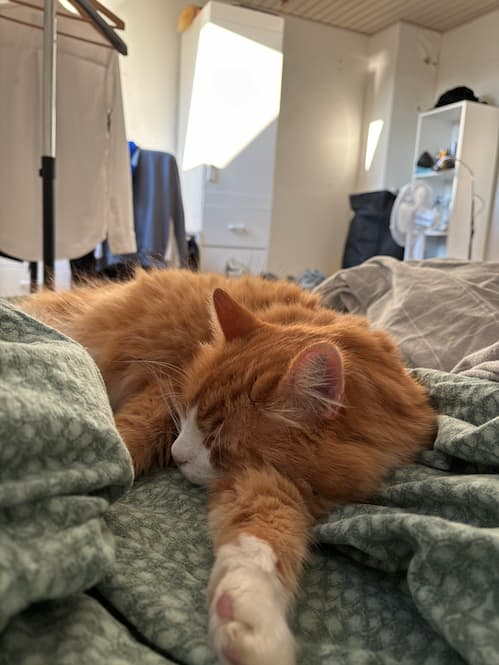

Bøvsen er min families 9-årige rødhårede kat – doven som få og fuld af charme. Hans navn får altid folk til at trække på smilebåndet, men det passer faktisk ret godt til ham: Han tager livet med ro, nyder en god lur og har ikke travlt med noget som helst.
